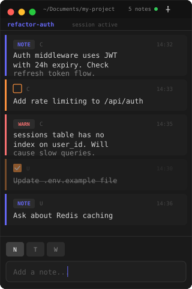

A floating scratchpad that stays on screen while you work. Notes, todos, warnings. All ephemeral.

Context vanishes between tool calls.
You forget what Claude suggested three steps ago. Your terminal scrolls past the important bits. Every interrupted thought costs you minutes of re-reading. Every lost TODO means re-discovering what needs fixing.
Claude told you about a critical edge case in step 2. By step 7, you've scrolled past it. You either re-ask (wasting context) or miss it entirely.
Add one line to your MCP config. Claude Code launches the MCP server automatically. Clause.app starts if it isn't running.
// ~/.claude.json "mcpServers": { "clause": { "command": "clause-mcp" } }
Claude pushes notes, todos, and warnings in real time. You add your own directly. The panel floats above everything, always visible.
Ephemeral by design. No archive, no clutter, no stale notes from last week. Every session starts clean.
Context, references, architectural decisions. The things you need to see while coding but don't want to hold in your head.
Action items and next steps. Mark them done with a click. Completed todos get strikethrough and fade out.
Gotchas, blockers, things that will break if you forget. The notes that prevent the "oh no" moment 20 minutes later.
Claude uses these automatically. You can also call them from any MCP client.
Claude Code | | stdio (MCP protocol) v clause-mcp (CLI binary) | | Unix domain socket | ~/.clause/clause.sock v Clause.app (SwiftUI floating window)
Build from source. One clone, one build, one config line.